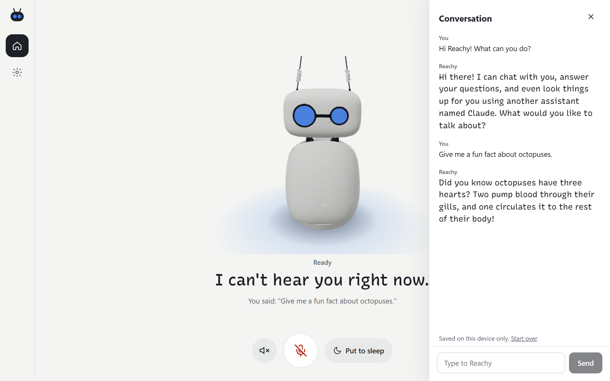

Everything Agent
Talk with your Reachy Mini the way you'd talk with a person: no wake word, no button. It listens, answers out loud, moves its head while it speaks, and stops when you talk over it.

Fast
Speech, thinking and voice all stream, so Reachy starts answering a moment after you stop talking.
Your language
Reachy replies in the language you speak: English, Hindi, French, Spanish or Japanese.
Hard questions
Questions that need the web go to Claude, and Reachy speaks the answer as it arrives.
Any model
OpenRouter, any OpenAI-compatible provider, or a local Ollama model.
Get started
- Install the app from your Reachy Mini dashboard.
- Start it, then open
http://reachy-mini.local:8042on your phone or laptop. - Choose a PIN, and add a Cartesia key and an OpenRouter key.
No robot? The Windows and macOS desktop app talks through your computer's microphone and speaker. See the README for the installers and for running from source.